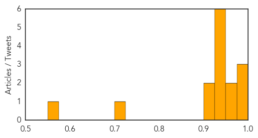
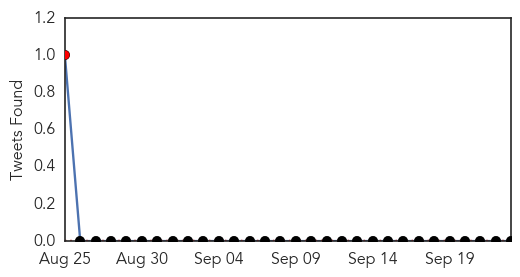

Influenza
30-Day Web Trend
9 alerts, 1 warnings

30-Day Twitter Trend
0 alerts, 0 warnings

Article Locations

Article Confidences
Top Articles:
- 0.997
- Column: Epidemics and the global village
- 0.997
- Enterovirus D68 confirmed in Utah, positive cases at Primary Children’s Hospital
- 0.990
- CDC confirms enterovirus D68 in King County; child hospitalized
- 0.962
- Bismarck/Minot/Williston/Dickinson-KXNEWS,ND
- 0.960
- Officials urge prevention in wake of enterovirus cases
- 0.949
- Newly-detected bird flu in Southeast Asia poses threat to animal health, people's livelihoods
- 0.949
- Newly-detected bird flu in Southeast Asia poses threat to animal health, people's livelihoods
- 0.949
- Newly-detected bird flu in Southeast Asia poses threat to animal health, people's livelihoods
- 0.949
- Newly-detected bird flu in Southeast Asia poses threat to animal health, people's livelihoods
- 0.949
- Newly-detected bird flu in Southeast Asia poses threat to animal health, people's livelihoods
- 0.939
- Newly-detected bird flu in Southeast Asia poses threat to animal health people livelihoods
- 0.916
- Pregnant moms to get flu shots
- 0.912
- Newly-detected bird flu in Southeast Asia
- 0.718
- FAO issues warning over new strain of avian ‘flu H5N6
- 0.553
- Increase in regional respiratory illnesses prompts visitor restrictions at McLaren Bay Region, Special Care
Top Tweets:
-
No tweets found for Sep 23, 2014
Mumps
30-Day Web Trend
2 alerts, 0 warnings

30-Day Twitter Trend
1 alerts, 0 warnings

Article Locations

Article Confidences

Top Articles:
-
No articles found for Sep 23, 2014
Top Tweets:
-
No tweets found for Sep 23, 2014